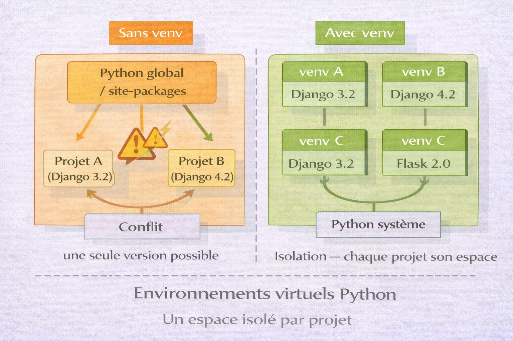
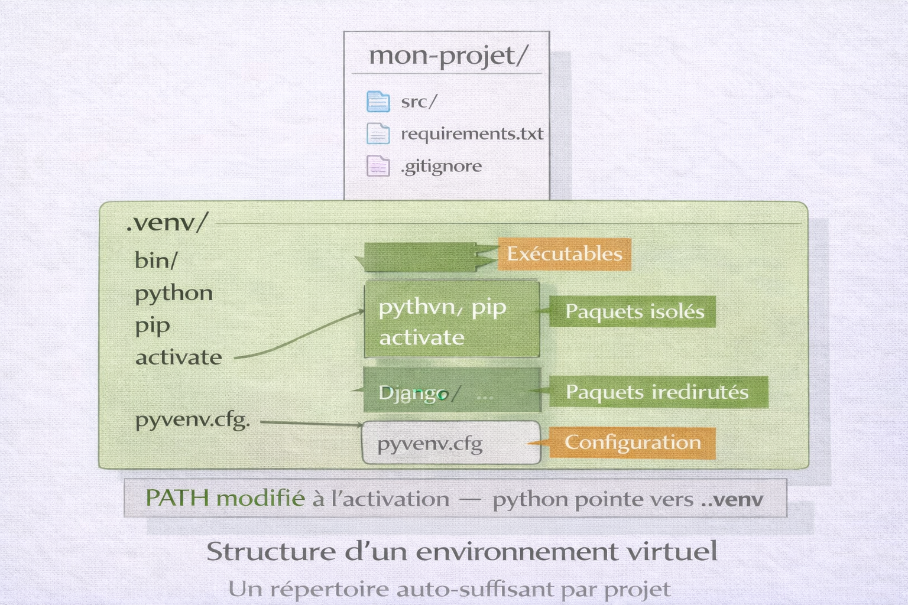
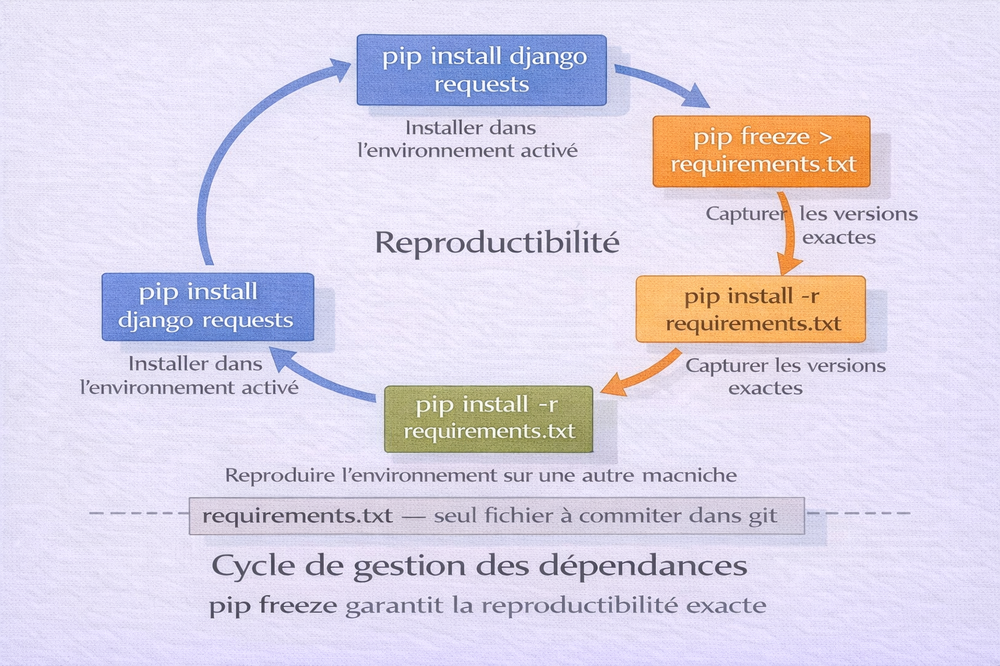

Python — Environnements Virtuels (venv)¶
Analogie
Un laboratoire pharmaceutique dispose de plusieurs chercheurs. Chacun travaille sur une molécule différente qui nécessite des réactifs spécifiques, des températures précises et des équipements dédiés. Partager un seul espace de travail commun serait catastrophique — les réactifs se contamineraient mutuellement. Chaque chercheur dispose donc d'un laboratoire isolé, avec son propre inventaire, sans interférence avec les autres. Un environnement virtuel Python fonctionne exactement ainsi : un espace isolé par projet, avec ses propres paquets et ses propres versions, totalement indépendant du reste du système.
venv est le module standard Python, intégré depuis Python 3.3, qui permet de créer des environnements virtuels isolés. Chaque environnement dispose de son propre interpréteur Python, de ses propres paquets installés via pip, et de son propre espace de configuration — sans interférer avec les autres projets ni avec l'installation Python du système.
Sans isolation, tous les projets Python partagent le même espace d'installation global. Cela crée inévitablement des conflits de versions : un projet nécessite Django 3.2, un autre exige Django 4.2 — il est impossible de satisfaire les deux simultanément. venv résout ce problème structurellement.
Pourquoi c'est important
Tout projet Python sérieux utilise un environnement virtuel. C'est une pratique non négociable en développement professionnel — les frameworks (Django, Flask, FastAPI), les outils de data science (NumPy, Pandas, TensorFlow) et les pipelines CI/CD en dépendent tous.
Pourquoi isoler les dépendances¶
Le problème sans environnement virtuel¶
L'image ci-dessous illustre ce qui se passe sans isolation. Le conflit de versions entre projets est la cause la plus fréquente d'environnements Python corrompus et de bugs difficiles à reproduire.

Sans environnement virtuel, pip installe tous les paquets dans un seul répertoire global sur le système. Deux projets nécessitant des versions différentes d'un même paquet ne peuvent pas coexister — le dernier installé écrase le précédent. L'environnement global devient progressivement incohérent et impossible à reproduire.
flowchart TB
PIP["pip install global"]
PROJ_A["Projet A\nDjango 3.2\nrequests 2.26"]
PROJ_B["Projet B\nDjango 4.2\nrequests 2.31"]
PROJ_C["Projet C\nFlask 2.0\nrequests 2.28"]
GLOBAL["Installation globale Python\nUne seule version par paquet"]
PIP --> GLOBAL
PROJ_A -->|"conflit"| GLOBAL
PROJ_B -->|"conflit"| GLOBAL
PROJ_C -->|"conflit"| GLOBALConséquences concrètes sans isolation : un paquet mis à jour pour un projet casse un autre projet, les versions installées sur la machine de développement diffèrent de la production, le fichier requirements.txt contient des paquets qui n'appartiennent pas au projet, les pipelines CI/CD échouent par manque de reproductibilité.
La solution — un environnement par projet¶
flowchart TB
SYSTEME["Python système"]
ENV_A["venv Projet A\nDjango 3.2\nrequests 2.26"]
ENV_B["venv Projet B\nDjango 4.2\nrequests 2.31"]
ENV_C["venv Projet C\nFlask 2.0\nrequests 2.28"]
SYSTEME --> ENV_A
SYSTEME --> ENV_B
SYSTEME --> ENV_CChaque projet possède son propre environnement isolé avec exactement les versions dont il a besoin. Les environnements ne s'interfèrent jamais.
Architecture d'un environnement virtuel¶
L'image ci-dessous montre la structure interne d'un environnement virtuel créé par venv. Comprendre cette structure explique pourquoi l'activation modifie le PATH et comment Python résout les imports dans un environnement activé.

venv crée un répertoire auto-suffisant qui contient une copie ou un lien symbolique vers l'interpréteur Python, un pip propre à l'environnement, et un répertoire site-packages isolé. À l'activation, les variables PATH et VIRTUAL_ENV sont modifiées pour pointer vers cet environnement — toute commande python ou pip opère alors dans l'espace isolé.
flowchart TB
subgraph "Répertoire du projet"
PROJ["mon-projet/"]
subgraph "venv/ — environnement virtuel"
BIN["bin/ (Linux/macOS)\nScripts/ (Windows)\n— python\n— pip\n— activate"]
LIB["lib/\npython3.x/\nsite-packages/\n— django/\n— requests/\n— ..."]
INC["include/\nEn-têtes C Python"]
CFG["pyvenv.cfg\nConfiguration"]
end
SRC["src/\napp.py\nmodels.py"]
REQ["requirements.txt"]
end
BIN --> LIBContenu de pyvenv.cfg :
home = /usr/bin # Répertoire Python source
include-system-site-packages = false # Isolation du système (recommandé)
version = 3.12.3 # Version Python utilisée
Mécanisme d'isolation : quand l'environnement est activé, le shell ajoute venv/bin/ en tête du PATH. La commande python pointe alors vers l'interpréteur de l'environnement, et cet interpréteur cherche ses modules dans venv/lib/python3.x/site-packages/ — pas dans les packages système.
Prérequis¶
venv est inclus dans Python 3.3+ et ne nécessite aucune installation supplémentaire. Il est disponible comme module standard.
# Vérifier la version Python
python3 --version
# Python 3.12.3
# Vérifier que venv est disponible
python3 -m venv --help
# Sur Ubuntu/Debian, venv peut nécessiter un paquet séparé
sudo apt install python3-venv
Debian et Ubuntu
Sur Debian et Ubuntu, python3-venv n'est pas toujours installé avec Python. Si la commande python3 -m venv échoue avec "ensurepip is not available", installer python3-venv via apt.
Création et activation¶
Créer un environnement virtuel¶
# Se placer dans le répertoire du projet
cd ~/projects/mon-projet
# Créer l'environnement dans le sous-répertoire .venv
python3 -m venv .venv
# Créer avec une version Python spécifique
python3.11 -m venv .venv
python3.12 -m venv .venv
# Créer avec accès aux packages système (rare — cas spécifiques)
python3 -m venv .venv --system-site-packages
# Créer sans pip (environnements minimalistes)
python3 -m venv .venv --without-pip
Nommage de l'environnement
Le nom .venv (avec point) est la convention standard Python — il est reconnu automatiquement par VSCode, PyCharm et la plupart des outils. Le nom venv (sans point) est également courant. Éviter env seul qui est trop générique.
Activer l'environnement¶
L'activation modifie le PATH du shell courant pour pointer vers l'environnement virtuel.
source .venv/bin/activate
# Le prompt change pour indiquer l'environnement actif
# (.venv) user@machine:~/projects/mon-projet$
# PowerShell
.venv\Scripts\Activate.ps1
# Si erreur de politique d'exécution
Set-ExecutionPolicy -ExecutionPolicy RemoteSigned -Scope CurrentUser
.venv\Scripts\Activate.ps1
# CMD (invite de commandes)
.venv\Scripts\activate.bat
Vérifier que l'activation a fonctionné :
# Le prompt doit afficher (.venv) en préfixe
which python
# /home/user/projects/mon-projet/.venv/bin/python
python --version
# Python 3.12.3
# La variable VIRTUAL_ENV est définie
echo $VIRTUAL_ENV
# /home/user/projects/mon-projet/.venv
Désactiver l'environnement¶
deactivate
# Le prompt revient à la normale
# Le PATH est restauré à son état original
Supprimer un environnement¶
Un environnement virtuel est un simple répertoire — le supprimer suffit.
# Désactiver d'abord si actif
deactivate
# Supprimer le répertoire
rm -rf .venv
# Recréer proprement si nécessaire
python3 -m venv .venv
Gestion des dépendances¶
L'image ci-dessous illustre le cycle complet de gestion des dépendances — de l'installation à la reproduction de l'environnement sur une autre machine. Ce cycle est la base de la reproductibilité en Python.

Les dépendances s'installent avec pip dans l'environnement activé, pip freeze capture l'état exact de l'environnement dans requirements.txt, et pip install -r requirements.txt reproduit cet état identique sur n'importe quelle autre machine. Ce cycle garantit que développement, tests et production utilisent exactement les mêmes versions.
Installer des paquets avec pip¶
# Vérifier que l'environnement est activé
echo $VIRTUAL_ENV
# Installer un paquet
pip install requests
pip install django
pip install flask fastapi uvicorn
# Installer une version spécifique
pip install django==4.2.0
pip install requests>=2.28.0,<3.0.0
# Installer depuis un fichier requirements.txt
pip install -r requirements.txt
# Installer en mode développement (package local avec lien symbolique)
pip install -e .
# Lister les paquets installés dans l'environnement actif
pip list
# Format détaillé avec versions
pip list --format=columns
# Vérifier un paquet spécifique
pip show django
# Vérifier les dépendances obsolètes
pip list --outdated
Le fichier requirements.txt¶
requirements.txt est le fichier de référence qui liste les dépendances d'un projet. Il permet de reproduire l'environnement à l'identique sur n'importe quelle machine.
# Capturer l'état exact de l'environnement (versions épinglées)
pip freeze > requirements.txt
# Vérifier le contenu
cat requirements.txt
certifi==2024.2.2
charset-normalizer==3.3.2
django==4.2.13
idna==3.7
requests==2.31.0
urllib3==2.2.1
pip freeze capture TOUT
pip freeze liste toutes les dépendances installées, y compris les dépendances transitives (dépendances de dépendances). Le fichier peut rapidement contenir des paquets que le projet n'utilise pas directement. Voir la section "Alternatives" pour des outils gérant cette distinction.
Formats de spécification de versions :
django==4.2.0 # Version exacte — reproductibilité maximale
requests>=2.28.0 # Version minimale
flask>=2.0.0,<3.0.0 # Intervalle de versions
numpy~=1.24.0 # Compatible release — 1.24.x uniquement
pytest # Pas de contrainte — dernière version
Bonnes pratiques requirements.txt :
# requirements.txt — dépendances production uniquement
pip freeze | grep -v "pytest\|black\|flake8" > requirements.txt
# requirements-dev.txt — dépendances développement
pip freeze > requirements-dev.txt
# Inclure les dépendances de production
-r requirements.txt
# Dépendances développement uniquement
pytest==8.2.0
black==24.4.2
flake8==7.0.0
mypy==1.10.0
Reproduire un environnement¶
# Cloner le projet
git clone https://github.com/user/mon-projet.git
cd mon-projet
# Créer et activer un environnement
python3 -m venv .venv
source .venv/bin/activate
# Installer toutes les dépendances
pip install -r requirements.txt
# Vérifier
pip list
Mettre à jour des dépendances¶
# Mettre à jour un paquet spécifique
pip install --upgrade requests
# Mettre à jour pip lui-même
pip install --upgrade pip
# Mettre à jour tous les paquets (à faire avec précaution)
pip list --outdated --format=json | python3 -c "
import json, sys, subprocess
pkgs = json.load(sys.stdin)
for p in pkgs:
subprocess.run(['pip', 'install', '--upgrade', p['name']])
"
# Après mise à jour, recapturer requirements.txt
pip freeze > requirements.txt
Bonnes pratiques¶
Structure de projet recommandée¶
# mon-projet/
# .venv/ # Environnement virtuel — ignoré par git
# src/
# mon_module/
# __init__.py
# models.py
# services.py
# tests/
# test_models.py
# .gitignore # Contient .venv/
# requirements.txt # Dépendances production
# requirements-dev.txt # Dépendances développement
# README.md
# pyproject.toml # Configuration du projet (optionnel)
.gitignore¶
Le répertoire de l'environnement virtuel ne doit jamais être commité dans git — il est spécifique à chaque machine et peut contenir plusieurs centaines de fichiers.
cat >> .gitignore << 'EOF'
# Environnements virtuels Python
.venv/
venv/
env/
ENV/
# Cache Python
__pycache__/
*.py[cod]
*.pyo
# Distribution et packaging
*.egg-info/
dist/
build/
EOF
Ne jamais commiter le répertoire venv
Un environnement virtuel contient des exécutables et des liens absolus spécifiques à la machine. Le commiter dans git corrompt le dépôt, gonfle l'historique inutilement et ne fonctionnera pas sur une autre machine. Seul requirements.txt se commite.
Automatiser l'activation¶
#!/usr/bin/env bash
# setup.sh — à exécuter une fois à la récupération du projet
# Créer l'environnement si absent
if [ ! -d ".venv" ]; then
python3 -m venv .venv
echo "Environnement créé dans .venv/"
fi
# Activer
source .venv/bin/activate
# Installer les dépendances
pip install --upgrade pip
pip install -r requirements-dev.txt
echo "Environnement prêt. Activer avec : source .venv/bin/activate"
Makefile pour les commandes courantes¶
.PHONY: venv install freeze test clean
# Créer l'environnement
venv:
python3 -m venv .venv
# Installer les dépendances
install:
.venv/bin/pip install --upgrade pip
.venv/bin/pip install -r requirements-dev.txt
# Capturer les dépendances actuelles
freeze:
.venv/bin/pip freeze > requirements.txt
# Lancer les tests
test:
.venv/bin/pytest tests/
# Supprimer l'environnement
clean:
rm -rf .venv __pycache__ *.egg-info
Intégration VSCode¶
VSCode détecte automatiquement les environnements virtuels dans le répertoire du projet. Il suffit de sélectionner l'interpréteur.
Sélectionner l'interpréteur :
Ctrl+Shift+P → "Python: Select Interpreter" → choisir .venv/bin/python
VSCode mémorise ce choix dans .vscode/settings.json :
{
"python.defaultInterpreterPath": "${workspaceFolder}/.venv/bin/python",
"python.terminal.activateEnvironment": true,
"python.linting.enabled": true,
"python.formatting.provider": "black"
}
Avec "python.terminal.activateEnvironment": true, VSCode active automatiquement l'environnement dans chaque nouveau terminal intégré.
Extensions recommandées :
ms-python.python — support Python complet avec détection automatique de venv.
Alternatives à venv¶
Comparaison des outils de gestion d'environnements Python¶
| Outil | Cas d'usage | Avantages | Inconvénients |
|---|---|---|---|
| venv | Développement général | Standard Python, sans dépendances | Pas de gestion de versions Python, requirements.txt limité |
| virtualenv | venv étendu | Supporte Python 2, plus rapide | Dépendance externe |
| conda | Data science, ML | Gère Python + paquets non-Python (CUDA, etc.) | Lourd, écosystème distinct |
| poetry | Projets structurés | Gestion dépendances avancée, build, publish | Courbe d'apprentissage |
| pipenv | Pipfile + venv | requirements.txt amélioré | Moins maintenu |
| uv | Remplacement universel | Extrêmement rapide (Rust), tout-en-un | Plus récent, écosystème en développement |
uv — le successeur rapide¶
uv est un gestionnaire Python écrit en Rust, développé par Astral. Il remplace pip, venv et pip-tools avec des performances nettement supérieures.
# Linux / macOS
curl -LsSf https://astral.sh/uv/install.sh | sh
# Windows (PowerShell)
powershell -ExecutionPolicy ByPass -c "irm https://astral.sh/uv/install.ps1 | iex"
# Via pip
pip install uv
# Créer un environnement
uv venv .venv
# Activer (identique à venv)
source .venv/bin/activate
# Installer des paquets — beaucoup plus rapide que pip
uv pip install django requests
# Générer requirements.txt
uv pip freeze > requirements.txt
# Installer depuis requirements.txt
uv pip install -r requirements.txt
uv est 10 à 100 fois plus rapide que pip pour l'installation de paquets grâce à la résolution parallèle et au cache agressif.
poetry — gestion de projet complète¶
# Initialiser un projet
poetry new mon-projet
cd mon-projet
# Ajouter une dépendance
poetry add django
poetry add pytest --group dev
# Activer l'environnement
poetry shell
# Installer les dépendances
poetry install
# Exporter vers requirements.txt
poetry export -f requirements.txt --output requirements.txt
poetry gère la distinction entre dépendances directes et transitives dans pyproject.toml, et génère un fichier poetry.lock pour la reproductibilité exacte.
conda — data science et ML¶
# Créer un environnement avec une version Python spécifique
conda create -n mon-projet python=3.12
# Activer
conda activate mon-projet
# Installer des paquets (y compris paquets non-Python comme CUDA)
conda install numpy pandas scikit-learn
conda install pytorch torchvision -c pytorch
# Exporter l'environnement
conda env export > environment.yml
# Reproduire depuis environment.yml
conda env create -f environment.yml
conda est l'outil de référence pour les projets de data science et machine learning car il gère les dépendances non-Python (librairies C, CUDA, MKL).
Dépannage¶
"python3 -m venv" échoue¶
# Sur Ubuntu / Debian
sudo apt install python3-venv python3-pip
# Vérifier la version Python
python3 --version
# Créer sans pip si l'erreur persiste
python3 -m venv .venv --without-pip
# Puis installer pip manuellement
curl https://bootstrap.pypa.io/get-pip.py -o get-pip.py
.venv/bin/python get-pip.py
rm get-pip.py
ModuleNotFoundError après activation¶
# Vérifier que l'environnement est bien activé
echo $VIRTUAL_ENV
which python
# Vérifier que le paquet est installé dans l'environnement actif
pip show nom-du-paquet
# Réinstaller si absent
pip install nom-du-paquet
# Si le module est installé mais introuvable — vérifier le bon interpréteur
python -c "import sys; print(sys.executable)"
L'environnement ne s'active pas sous Windows (PowerShell)¶
# Vérifier la politique actuelle
Get-ExecutionPolicy
# Autoriser les scripts locaux
Set-ExecutionPolicy -ExecutionPolicy RemoteSigned -Scope CurrentUser
# Activer l'environnement
.venv\Scripts\Activate.ps1
# Vérifier
$env:VIRTUAL_ENV
pip install échoue (SSL ou réseau)¶
# Mettre pip à jour en premier
pip install --upgrade pip
# Utiliser un miroir alternatif (entreprise ou région)
pip install django --index-url https://pypi.org/simple/
# Désactiver la vérification SSL (développement uniquement)
pip install django --trusted-host pypi.org --trusted-host files.pythonhosted.org
Conflit de versions entre paquets¶
# Identifier les conflits
pip check
# Résultat exemple :
# requests 2.31.0 has requirement urllib3<3,>=1.21.1, but urllib3 3.0.0 is installed
# Forcer une version compatible
pip install "urllib3>=1.21.1,<3"
# En dernier recours, recréer l'environnement proprement
deactivate
rm -rf .venv
python3 -m venv .venv
source .venv/bin/activate
pip install -r requirements.txt
Environnement corrompu après déplacement du projet¶
# Un environnement virtuel contient des chemins absolus
# Le déplacer ou renommer le répertoire du projet le corrompt
# Solution — recréer depuis requirements.txt
deactivate
rm -rf .venv
python3 -m venv .venv
source .venv/bin/activate
pip install -r requirements.txt
Un environnement virtuel n'est pas portable
Ne pas copier ou déplacer un répertoire .venv — il contient des chemins absolus vers l'interpréteur Python de la machine d'origine. Toujours recréer l'environnement depuis requirements.txt sur la machine cible.
Conclusion¶
Conclusion
L'environnement virtuel est la première décision à prendre avant d'écrire la moindre ligne de code Python. Ce n'est pas une option avancée réservée aux projets complexes — c'est la pratique de base qui évite des heures de débogage liées à des conflits de versions. venv est inclus dans Python, sans installation supplémentaire, et suffit pour la grande majorité des projets. Le fichier requirements.txt est l'artefact central : il matérialise les dépendances du projet, garantit la reproductibilité et documente l'environnement. Commiter requirements.txt, ignorer .venv, activer l'environnement avant toute commande pip — ces trois réflexes suffisent à maintenir un environnement Python propre et reproductible.